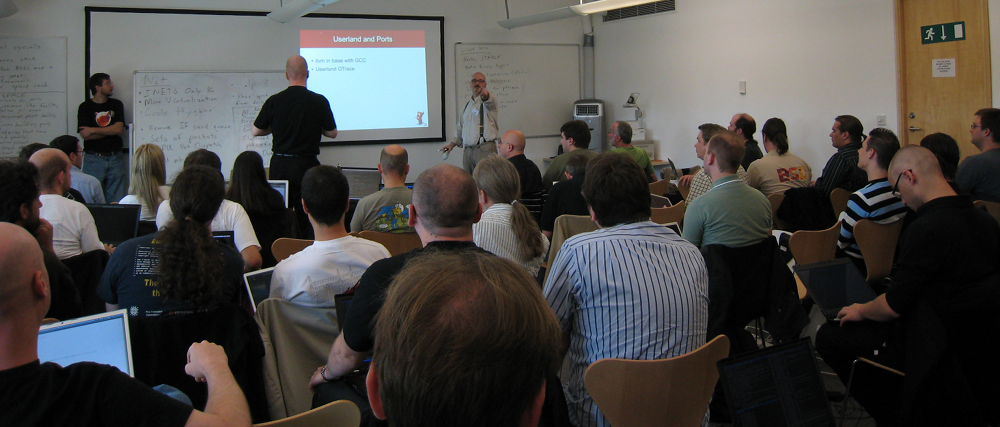

FreeBSD 2009
живее всех живых
netcraft confirms it
Год 2009
- выходит FreeBSD 8.0
- прошёл очередной Google Summer of Code
- начинается FreeBSD 9-CURRENT
- GPLv3 агитирует enterprise за BSD
Восемь-точка-Ноль
- почти по расписанию
- революционная эволюция
- POLA, COMPAT_FREEBSD7, ports/misc/compat7x
файловые системы
- production ZFS, версия 13
- NFS kernel locking
- новый NFS v3/v4, с базовой поддержкой Kerberos
- NFS v4 ACLs в 8.1
дисковая подсистема
- ATA AHCI — CAM, NCQ
- bsdlabel расширен до 26 разделов
- загрузка с ZFS
- горячее отключение смонтированных флэшек и не только
geom
- GEOM_PART по умолчанию
- переход с fdisk и bsdlabel на gpart
- загрузка с GPT на обычном BIOS
- gvinum 2 — наследие GSoC 2007
виртуализация
- Xen domU — пока только 32-bit
- Jails v2
- multi-IPv4/v6/no-IP
- persistent jails
- иерахические jails
- привязка к CPU
- CPU/RAM ограничения - на подходе
- Sun VirtualBox в режиме Host
подсистема USB
- полностью новый MPSAFE-стэк
- переписаны почти все драйверы
- Linux compatibility layer
- поддержка популярной libusb
- поддержка новых типов транзакций (HS ISOC, split)
- device-side режим
сеть
- multi-FIB маршрутизация — setfib
- 802.11s mesh, D3.03
- vimage/virtnet
- ECMP — multipath routing, RADIX_MPATH
- Zero-copy BPF — tcpdump на скорости 10gbps
- переписан ARP
разработка/дебаг
- DTrace
- procstat
- kernel textdumps
- ddb scripting
- обновленные PmcTools
ядро
- MPSAFE TTY layer
- superpages
- ULE 3.0: поддержка cpusets и фундамент для топологий типа (cc)NUMA
- kmem_max до 512Gb
- NGROUPS от 1024 и выше
- обновленный syscons, UTF-8 в 8.1
безопасность
- no zero (NULL) mapping
- options MAC в GENERIC
- свежая версия аудит-подсистемы OpenBSM
архитектуры
- PowerPC G5, POWER3/4
- UltraSPARC III/IIIi
- поддержка интерфейсов на Sun Fire v440
- много новых типов ARM/Xscale
порты
- параллельная сборка — пока в пределах одного порта
- Mark Linimon работает над bug-tracking
- дополнительный quality assurance
Summer of Code 2009
- 17 успешных проектов из 20 начатых (85%)
- много студентов из числа committers, ветеранов GSoC
- как обычно, успешные студенты продолжают работать в проекте
Проекты GSoC 2009
- инфраструктура лиценизий в портах
- GPL-free поддержка ext2fs
- pkg_tools переписаны на libpkg
- порт puffs из NetBSD
- фундамент для tickless-ядра
- аудит отдельных приложений на базе TrustedBSD
- дисковый планировщик на базе geom
FreeBSD 9.x
курс на мировое господство
9.x: сеть
- inet6-only, inet-less ядро
- packet batching — группировка пакетов
- 802.11n на полной скорости
- дальнейшее распараллеливание
- повышение эффективности процессорного кэша
9.x: компилятор
- мы избегаем GPLv3 в базовой системе
- поэтому GCC давно не обновлялся
- плавно переходим на LLVM/Clang
- ядро i386/amd64 уже работает
- userland собирается на 99%
- Apple резво разрабатывает Clang
9.x: виртуализация
- Xen dom0, развитие domU
- дальнейшая работа над VirtualBox
- совершенствование jails, vimage/virtnet, multi-FIB
- иерархические ограничения ресурсов
9.x: архитектуры
- avr32, mips64, …
- форсированное улучшение поддержки arm
- уверенно занимаем промышленный embedded-рынок
- уверенно шагаем в пользовательский embedded-рынок
- свои люди в тылу врага :-)
9.x: userland
- пользовательский DTrace
- переработка rc.d — параллельный запуск, зависимости в runtime
- улучшенные cross-compilation и cross-runtime
- улучшенная поддержка pstack/ltrace/strace
9.x: ядро
- глубокая модульность сетевога стэка
- GENERIC+modules должно хватать всем
- binary-only системы, обновления ядра freebsd-update
- kexec для горячей перезагрузки ядра
- развитие RDMA, поддержка InfiniBand
9.x: энергетика
- hibernate (suspend-to-disk, S4)
- выключение опущенных интерфейсов, других PCI-устройств
- расширение поддержки CPU-states (C1/2/3/4E)
сообщество
- BSD-сертификация на конференциях
- официальные forums.FreeBSD.org
- 346 активных committers (октябрь 2009)
- присутствие на IT-events по всему миру
конференции
- BSDCan — Оттава, Канада, ежегодно в мае
- EuroBSDCon 2009 — Cambridge, Англия, сентябрь
- EuroBSDCon 2010 — Карлсруэ, Германия, октябрь
